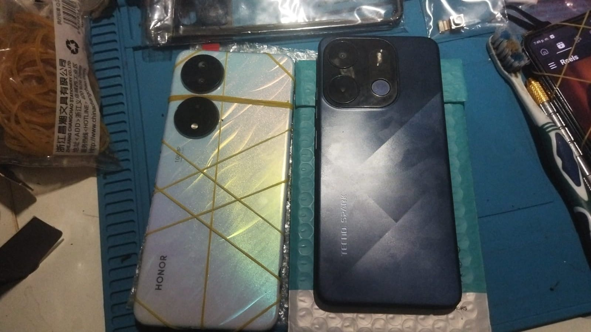

Reparación Profesional de Smartphones
Servitec, Jun, 2025

Se resuelve los problemas que tengas en tu celular ya sea por fallos de sowfare o por problemas me caidas y mucho mas.
Leer masSoluciones Técnicas Profesionales

Se resuelve los problemas que tengas en tu celular ya sea por fallos de sowfare o por problemas me caidas y mucho mas.
Leer mas
Se repara modelos de celulares ya sea gama alta o gama baja modelos a reparar: samsung , motorola, huawei, infinix , tecno, redmi y mucho mas haga su consulta
Leer mas